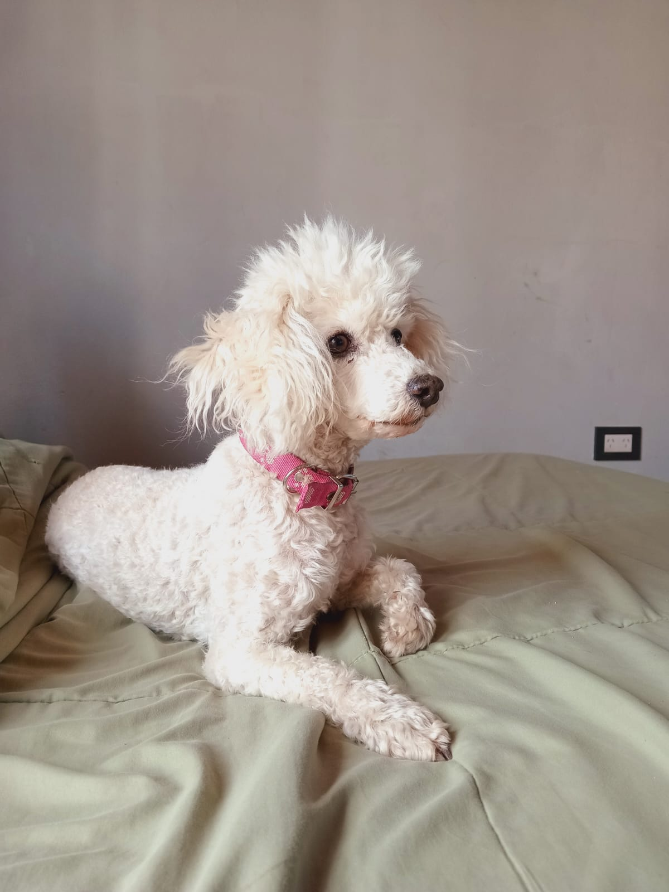
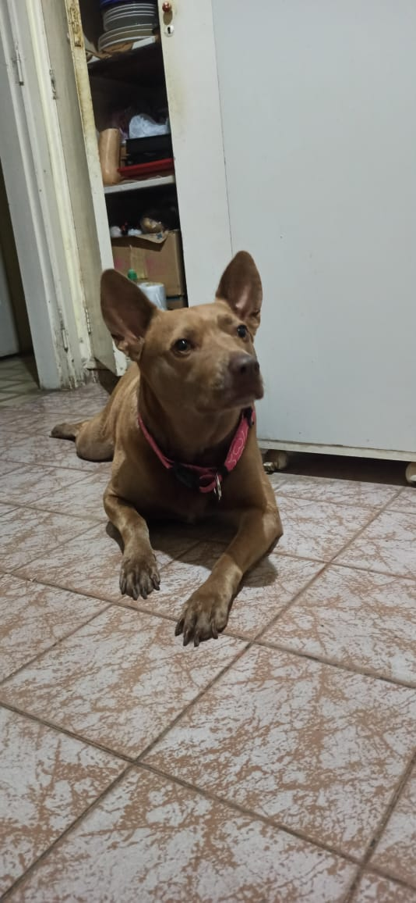

La vida de Tomy,Lola,Yino,Renata,Picaza y Canela

Tomy es un perro de raza caniche color blanco que nacio en la ciudad de Cordoba,en el año 2014. Desde pequeño su caracter fue docil ,su dueña Rita Virginilo,se mudo a la ciudad de Rio Cuarto,cuando el era un cachorro junto a la pequeña Agustina,desde entonces han vivido años muy felices los tres,a le encantan salir a pasear y jugar con los demas perros del barrio.
Lola es una perra de raza caniche de color blanco, que nacio en la ciudad de Rio Cuarto, en el año 2015, le encanta acostarse en la cama de su dueño Adrian Sosa,juega con sus hijos y no le gusta abrigarse en invierno,prefiere quedarse al lado del calefactor, cuando llegan visitas a la casa, los recibe con mucho amor.

Yino es un perro de raza caniche color negro,que nacio en 2024,en la localidad de Famailla vive junto a su dueño Nicolas Nadal le gusta dormir mucho,jugar con los gatos y robarle los huesos a los perros que sean mas grande que el.
Canela es una perra de raza cruza pitbull que nacio en la ciudad de Neuquen en el año 2017, vive en casa de la mama de Joel Valdiviezo, no le gusta bañarse, es muy activa y le gusta estar en el patio jugando con una pelota de basquet.

Renata y Picaza son dos perras de raza salchicha que nacieron en la ciudad de Cordoba ,Renata nacio en el 2020 y Picaza en el 2022,las dos son muy cariñosas y compañeras,son muy friolentas duermen con su dueña Rocio Gregorio, les encanta jugar.